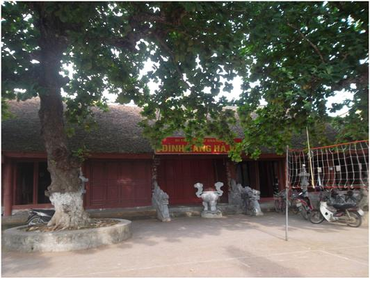
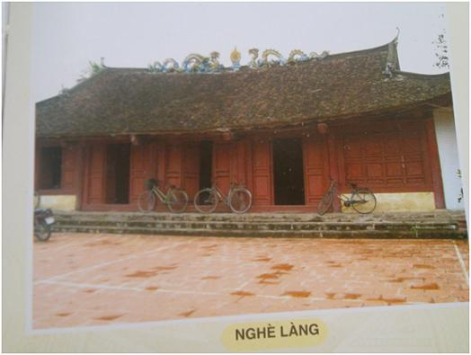
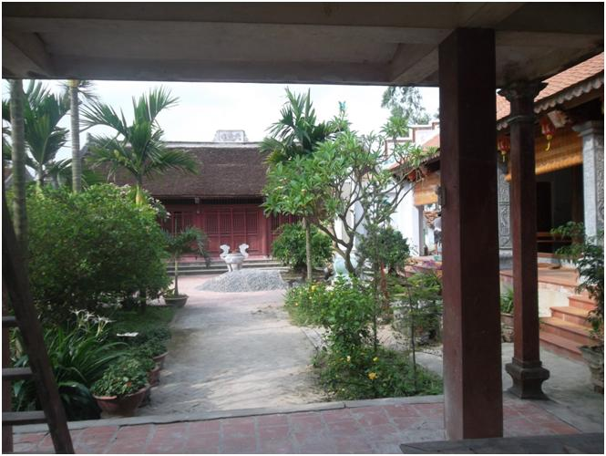

Chương 4

.1. Đình làng
Đình Hà Vỹ hiện thờ năm vị Thánh có công giúp nước cứu dân. Đó là Thuỷ Hải, Đăng Giang, Khổng Chúng, Tam Giang và Đông Hải Đoàn của ba thời kỳ lịch sử khác nhau
Trên thượng lương của đình còn ghi rõ:
Đình được xây dựng lần đầu vào năm Canh Thìn (1520), trên nền miếu (hoặc đền) xưa (1), sửa chữa năm Cảnh Hưng thứ 5 (1744), và làm lại to, rộng hơn vào niên hiệu Thành Thái thứ 12 năm Canh Tý (1900) (2)
Kiến trúc ngôi đình Hà Vỹ theo bố cục chữ công (工) bề thế to lớn uy nghi. Toà đại đình có bẩy gian hai dĩ (đình cũ có năm gian hai dĩ) với chiều dài cả hiên là 29,7 m, rộng 14,5 m, cao hơn 6,5 m với tổng diện tích là 432 m2..
Hậu cung có chiều dài 10,8 m, rộng 7,5 m, gồm ba gian. Diện tích sử dụng là 81 m2. Các gian của đình bố trí không đều nhau: Gian giữa rộng 4 m, gian cạnh 3,4 m và 3 m, cân xứng sang hai bên, dĩ 1,85m và hiên 1,2 m. Vì kèo của toà đại đình được thiết kế theo kiểu tứ trụ, kẻ chồng, cốn đội hoành, một kiến trúc chắc khoẻ với kết cấu lục hàng châu. Hệ thống các cột của đình khá lớn và bố trí không đều, cột cái to nhất với đường kính 0,85m và các cột con đường kính từ 0,65 đến 0,75m. Các chân cột đều có tảng đá kê khít với chân và làm chìm xuống nền đình.
Xung quanh làm hiên thoáng, trên làm đao cong, dưới thả kẻ tạo sự cân bằng và vững chắc cho ngôi đình.
Mái đình do độ cong của bốn đao, bốn góc và trang trí nổi "lưỡng Long chầu Nguyệt" trên bờ nóc, cho ta cảm thấy như chiếc thuyền rồng, phần mái của hậu cung trổ cao thoáng, cân xứng với toà đại đình phía trước.
Nghệ thuật điêu khắc trong đình được sử dụng trang trí chủ yếu trên các bức cốn và đầu dư. Cốn mặt tiền gian giữa được chạm bằng “rồng phun nước”, mặt bên chạm “phượng vờn mây”; Các cốn hậu gian giữa chạm trang trí với nhiều hoa tiết đẹp mắt. Các đầu dư đều chạm lồng các hình đầu rồng với nhiều vẻ nhiều kiểu dạng, thể hiện tài nghệ kiến trúc chạm khắc: Hoa, xoắn rau trơn... Hai đầu kẻ gian giữa chạm lân hoá, các tầu được chạm nổi lên. Trước giường hành trong cung được chạm nổi lên bức "Thiều châu trương nhĩ", chạm nổi "lưỡng Long chầu Nguyệt" sơn son thiếp vàng. Hai diềm dọc theo cột hậu chạm "Rồng phun nước", ngoài cửa vào cung cấm cũng là một bức "Thiều châu trương nhĩ". Chạm "lưỡng Long chầu Nguyệt", diềm hai bên chạm "Rồng phun nước", trên bức "thiều châu" là cốn chạm "Nạ đội nóc", hai bên cửa cấm có cốn chạm "Rồng ngậm hoành", dưới cốn cửa cấm là bức gỗ chạm "Lan đằng", chính giữa chạm nổi thiếp vàng ba chữ: " Tối linh từ ". Hai bên cửa vào cung đều chạm rồng hoá, chân đạp long mã và chạm "tứ quí" trên một khung gỗ. Gian chính giữa được bưng kín với màn giếng sơn son. Các góc và cạnh đều trang trí các hình hoa, hài hoà và trang nhã. Đặc biệt cửa võng của đình Hà Vỹ làm rất kỳ công, được sơn son thiếp vàng miêu tả "tứ linh, tứ quí", các hình khắc sống động hiên chuyết lấy nhau. Ngoài hệ "tứ linh, tứ quí", cửa võng còn có chạm "Lan đằng", hoa lá, long mã. Trên cửa võng chạm nổi bốn chữ “Thánh cung vạn tuế”
Sân đình rất rộng (khoảng 450 m2) xây toàn bằng gạch vuông to do làng Bát Tràng sản xuất, hai bên sân có trồng hai cây bàng (nay vẫn còn) trước sân là ao đình có bờ xây gạch, sát bờ là bệ vàng dùng để đốt vàng mã hoá chân hương, hai góc sân có bến rửa chân (ao đình đã lấp cùng với ao cổng Sứ để làm chợ Quậy như ngày nay).
Cạnh đình còn có Văn Chỉ nơi thờ đức Khổng Tử do các nho sĩ Hà Vỹ xây dựng (nay không còn)
Đình Hà Vỹ hiện nay còn lưu giữ được nhiều đồ thờ quí làm bằng gỗ, sứ và đồng đặt ở các ban thờ trong đình
Trong cửa cấm (hậu cung) có:
- Trên ban thờ có 5 long ngai bằng gỗ, tay đầu rồng sơn son thiếp vàng, biểu tượng cho chỗ ngồi của 5 vị thần, trước mỗi ngai là một hòm sắc phong của các triều Vua trước đây.
Hiện nay ở đình còn lưu được 42 đạo sắc phong của 10 triều đại Vua nước ta phong tặng 15 lần cho các Thánh ở đình. Đạo sớm nhất vào năm Cảnh Hưng thứ 44 (1783), đạo gần đây nhất vào năm Khải Định thứ 9 (1924) (xem phụ lục 1- chỉ lấy 10/42 sắc phong, tác giả đã phiên âm và phỏng dịch)
- Thần tích: 2 quyển - làm năm Vĩnh Hựu thứ 6 (1740), sao lại năm Thành Thái thứ 19 (1907) và các tài liệu như hương ước, mục lục …
- Sập hội đồng hình chữ nhật kích thước: 2m x 1,8m x 0,55m, chân quỳ, chiện, bốn mặt chạm dạ cá, mặt sập 4 góc bao lan hình chiện.
- Một số đồ thờ: Mâm bồng bằng đồng, mâm bồng bằng gỗ hình vuông, hình tròn, sơn son thiếp vàng, chân quỳ dạ cá, choé sứ, lục bình, đài nến, hạc đồng, nồi hương v.v..
- Bàn thờ bệ hạ có mâm bồng bằng gỗ hình bầu dục, mâm bồng bằng đồng, nồi hương.
- Hoành phi trong hậu cung ghi bốn chữ: "Ngũ nhạc giáng thần"
Ngoài cửa cấm có:
- Sập hội đồng chân quỳ bằng gỗ hình chữ nhật có cổ chạm lan đằng dạ cá, chân quỳ;
- Giá gỗ sơn son thiếp vàng có 9 thanh kiếm gỗ liền bao cũng sơn son thiếp vàng
- Hương án đặt chính giữa dưới cửa võng được sơn son thiếp vàng có kích thước lớn: 2,3 m x 1,11m x 2m, chạm trổ bốn mặt công phu, trên mặt bốn góc có 4 bao lan chạm lưỡng long, ô cổ chạm cúc, trúc, thông, mai tiếp đến là rồng chầu nạ. Hai bên là nạ đội bệ, xà dưới bệ chạm chiện lá, ô giữa chạm rồng chầu nguyệt, qui vờn mây, bộ tứ linh và chạm nạ, các ô bên chạm long mã, phượng lân hý cầu, hai bên chạm thất sự, ô giữa chạm rồng quấn, hai bên chạm long, mã rồi đến các ô cạnh phần dưới chạm trúc mai, nạ đội ô giữa và lèo chạm mây tan.
- Nồi hương sành da lươn lớn đặt trên hương án.
- Trước hương án có giá đèn bằng sắt như một cây hoa. Hai bên là hai con hạc bằng gỗ cao to đứng trên lưng con rùa.
- Hiên án có 6 bức hoành phi sơn then chữ vàng.
- Xưa có tới hơn 30 đôi câu đối treo ở các cột đình.
Đình Hà Vỹ trước đây có cửa bức bàn bưng kín xung quanh và có sàn gỗ lim nhiều bậc lát khắp các gian (trừ ba gian giữa lòng đình). Trong thời gian kháng chiến chống thực dân Pháp, người ta đã dỡ sàn, dỡ cửa và các câu đối của đình để lấy gỗ làm hầm.
Năm 1951 đình được xây bao quanh bằng gạch, khi không còn sàn đình, nhân dân đã lát nền đình bằng gạch lục, có thời kỳ một bên đình (phía Đại Vỹ) còn là nơi thờ Phật. Năm 1961 do thiếu chỗ học, đình còn được ngăn ra làm hai lớp học của trường cấp II Liên Hà (chỉ để gian giữa làm nơi lễ Thánh).
Sau ngày thống nhất đất nước nhiều gia đình, dòng họ và các hội đồng niên của hai thôn Đại Vỹ và Giao Tác đã cung tiến nhiều hiện vật vào đình như câu đối, hoành phi, cờ Tổ quốc, cờ Thần, trống, nồi hương…
Năm 2000 Ban quản lý di tích đình Hà Vỹ và chính quyền hai thôn Đại Vỹ và Giao Tác đã xây bức tường Bạch mã bằng tiền ủng hộ của nhân dân hai thôn
Năm 2004 Lãnh đạo hai thôn lại huy động tiền cung tiến của các hội đồng niên và một số gia đình hảo tâm cho lát lại sân đình bằng gạch ép xi măng mầu
Năm 2005 nền trong đình được lát lại bằng gạch nung vuông (30x30) do gia đình ông Ngô Văn Ninh thôn Đại Vỹ cung tiến
Năm 2007:
- Hội đồng niên Canh Tuất (sinh1970) cung tiến 01 bộ lư hương bằng đồng
- Hội đồng niên Mậu Thân (sinh 1968) cung tiến 01 bộ đỉnh hương bằng đồng
- Hội đồng niên Canh Tý (sinh 1960) cung tiến kinh phí để làm cửa gỗ ở hai đầu hồi đình
Cuối năm 2007, Ban quản lý di tích cho cải tạo ao đình, xây gạch bờ ao, làm đường xung quanh…
Đầu năm 2008 sân đình (ngoài tường Bạch mã) được lát lại bằng gạch ép xi măng mầu do gia đình ông Lê Văn Vĩnh thôn Giao Tác cung tiến
Tháng 10 năm 2008 Hội đồng niên ất Tý (sinh năm 1965) cung tiến bộ gươm trường bát bửu bằng gỗ sơn son thiếp vàng …
Đình Hà Vỹ ở vào vị trí trung độ của ba thôn nằm giữa hai thôn Đại Vỹ và Giao Tác, nên thời nào cũng là trung tâm văn hoá của cả làng. Đình là nơi hội họp bàn định các công việc của làng, nơi sinh hoạt văn hoá, tổ chức lễ hội, mít tinh, bầu cử, thi đấu thể thao, biểu diễn văn nghệ… nơi đón các anh bộ đội về làng và tiễn đưa các chàng trai lên đường bảo vệ Tổ quốc. Đình là nơi chứng kiến các sự kiện lịch sử thăng trầm của bao thế hệ nhân dân Hà Vỹ…
Với kiến trúc đồ sộ theo dáng dấp cuối Lê đầu Nguyễn, đình Hà Vỹ là một công trình kiến trúc đặc sắc của quê hương là sản phẩm chứng minh cho nghề nghiệp truyền thống đất thợ của dân làng Quậy
Đình Hà Vỹ đã được Bộ Văn hoá công nhận là di tích Lịch sử - Văn hoá năm 1989 (Quyết định số 100 VHQĐ ngày 21 tháng 01 năm 1989 )
Đình Hà Vỹ hiện thờ năm vị thánh có công với dân với nước. Đó là:
1) Ba vị Thánh thời hai bà Trưng: Thuỷ Hải, Đăng Giang và Khổng Chúng.
Thuỷ Hải và Đăng Giang là hai anh em sinh đôi cùng
sinh ngày 10 tháng Giêng năm Canh Thìn (năm 20 SCN). Thân mẫu của hai ông là bà họ Phùng, thân phụ là ông Trương Long quê ở Đường Lâm Sơn Tây. Trong khoảng thời gian ấy ông bà Trương Long đến trang Hà Hào dậy học và sinh ra Thuỷ Hải và Đăng Giang. Hai ông sinh ra có tư chất khác thường. Đến năm 16 tuổi hai ông đã có vóc người to lớn và sức lực hơn người lại thông minh tài giỏi võ nghệ cao cường.
Khi hai ông được 18 tuổi thì cha mẹ đều mất, hai ông chọn đất tốt để mai táng cha mẹ
Ba năm tang hết cũng là lúc Tô Định mang quân sang xâm lược nước ta, giết người tàn bạo. Thi Sách - chồng của bà Trưng Trắc - cũng bị chúng giết hại. Để trả thù cho chồng đền nợ nước, bà Trưng cùng em là Trưng Nhị đã phất cờ khởi nghĩa kêu gọi muôn dân chống giặc
Hưởng ứng lời kêu gọi cứu nước của hai bà Trưng, hai ông (Thuỷ Hải và Đăng Giang) nghe chiếu chỉ của Thiên tử bốn bể động lòng hưởng ứng; Ngay hôm ấy hai ông đã chiêu mộ được 500 binh sĩ rồi đem quân đến thẳng đồn bà Trưng. Bà Trưng thấy hai ông tài văn, giỏi võ bèn tuyển dụng và phong tước cho hai ông:
- Thuỷ Hải làm Tả tướng quân đô chỉ huy sứ;
- Đăng Giang làm Hữu tướng quân đô chỉ huy sứ
Sau đó hai ông về trang Hà Hào truyền lệnh cho binh
sĩ giữ trại lập đồn đóng quân, sửa sang Miếu thờ và mở tiệc khao quân một ngày, mời cả các cụ trong làng đến dự, hai ông bảo rằng:" Ngày trước Mẹ ta thường nói với anh em ta: làng này phải thờ các thần linh ra đời"
Các cụ nghe thấy rất mừng, bèn làm lễ bái giá, sau đó thấy sứ giả mang tờ chiếu lệnh cho hai ông đi đánh giặc Tô Định. Hai ông Thuỷ Hải và Đăng Giang cùng với quân của hai bà Trưng đồng loạt đánh giặc, giặc thua to, Tô Định bị giết. Bà Trưng lên ngôi, xưng là Trưng Nữ Vương, phong cho hai ông là "Đô chỉ huy sứ kiêm điện tiền phụ chính "
Đất nước yên bình được ba năm thì nhà Hán lại sai Mã Viện sang xâm chiếm nước ta, Bà Trưng lại giao cho hai ông cầm quân đánh giặc Mã Viện
Trong thời gian ấy ở trang Hà Hào có ông Khổng Chúng cũng có tài thao lược và sức lực hơn người theo hai bà Trưng và được bà Trưng phong là “Tiền lộ tướng quân”
Quân Mã Viện, tướng sĩ hùng mạnh, không ai địch nổi, Khổng Chúng đem quân đánh thẳng vào đồn Mã Viện nhưng bị thua, quân của hai bà Trưng và của hai ông Thuỷ Hải, Đăng Giang đã chiến đấu kiên cường nhưng không thắng nổi phải rút lui, cuối cùng đã hy sinh anh dũng vào ngày 10 tháng 7 năm 43 SCN, còn Khổng Chúng thu được 50 binh sĩ trở về trang Hà Hào để cố thủ. Quân Mã Viện đuổi theo, ông cùng các quân sĩ - có sự giúp sức của nhân dân Hà Hào - chiến đấu đến cùng. Khổng Chúng không may bị ngã ngựa và đã hy sinh ngày 12 tháng 9 cùng năm (năm 43 SCN). Mộ ngài được đặt ở khu đồng Sứ, Quần Trùng thôn Châu Phong
Vua Đinh Tiên Hoàng (968 - 979) đã phong cho hai ông Thuỷ Hải và Đăng Giang là Thượng đẳng thần
Đến thời Tiền Lê (980 -1009), Vua Lê Đại Hành lại phong cho ba ông đều là Đại Vương:
- Thuỷ Hải và Đăng Giang: Hiển ứng linh thông Đại vương
- Khổng Chúng: Linh ứng sáng triết Đại vương
Đến các thời đại vua sau đều sắc phong cho các ông là Thần và chuẩn y cho dân làng Hà Vỹ phải thờ ba vị Thần trên (xem thêm phần Hà Vỹ tham gia chống giặc ngoại xâm phong kiến phương Bắc chương 2, mục 2 )
2) Vị Thánh thứ tư: Tam Giang thời Lý Nam Đế - Triệu Quang Phục (thế kỷ thứ VI)
Ông Tam Giang sinh ngày 5 tháng Giêng năm 522 cha là người họ Trương, mẹ là người họ Đào ở trang Vân Mẫu huyện Quế Lương lộ Kinh Bắc (nay là huyện Quế Võ, tỉnh Bắc Ninh). Khi Triệu Quang Phục thay Lý Nam Đế đóng quân ở đầm Dạ Trạch. Ông Tam Giang nghe theo chiếu chỉ bèn chiêu mộ quân rồi đến đầm Dạ Trạch giúp Triệu Quang Phục và được Triệu Quang Phục cử làm “ Chỉ huy sứ dư tả tướng quân”
Ông Tam Giang đã về trang Hà Hào đóng quân, thiết lập đồn trại để đối phó với quân của Trần Bá Tiên. Đến năm 550 nhân nhà Lương có loạn to ông đã cùng với Triệu Quang Phục đánh thắng quân nhà Lương. Triệu Quang Phục lên ngôi Vua, xưng là Triệu Việt Vương. Hai mươi năm sau, (năm 571) Lý Phật Tử phản trắc đoạt quyền, Triệu Việt Vương phải chạy ra cửa biển tuẫn tiết
Ông Tam Giang không theo Lý Phật Tử mà trở về An Phú, Hương La trang đến đầu bến Giang Tân gần ngã Ba Xà sông Như Nguyệt (sông Cầu) gieo mình xuống dòng sông tự vẫn ngày 10 tháng 4 năm 571 vì không muốn “hai lòng” thờ hai Vua
Dân Hà Hào đã tế lễ đón thần về thờ ở đình làng
Thánh Tam Giang là người tài giỏi có khí tiết nên các đời vua sau đều sắc phong cho ông là “Phổ trạch Đại vương” và “Thượng đẳng thần”
3) Vị Thánh thứ 5: Đông Hải - đầu thế kỷ thứ XIII (cuối Lý đầu Trần).
Ông Đông Hải sinh ngày 12 tháng Giêng năm Canh Ngọ (1210), cha là Đoàn Thượng (làm quan to nhà Lý), mẹ là Phùng Thị Chinh người làng Hồng Thị, Châu Giang, Hải Dương. Khi mới sinh, Đông Hải đã khôi ngô tuấn tú, khi lớn lên đi học lại thông minh, mới 16 tuổi đã hiểu rộng, đọc kỹ binh thư và có võ nghệ cao cường. Khi ông 21 tuổi thì nhà Lý đã suy. Lý Chiêu Hoàng lên ngôi được hai năm thì nhường ngôi cho chồng là Trần Cảnh dưới sự xếp đặt của Trần Thủ Độ (năm ất - Dậu -1225)
Ông Đông Hải thấy nước nhà chuyển sang triều Trần không quang minh chính đại nên ông đã bất đồng căm phẫn có trí phục thù. Năm Canh Dần 1230 ông chiêu dụ các triều thần đồng quan điểm và xây dựng lực lượng luyện tập binh mã chờ cơ hội để giành lại ngôi Vua cho họ Lý
Ông đã chiêu mộ được 5 vạn quân sĩ rồi tiến quân sang đạo Kinh Bắc phủ Từ Sơn huyện Đông Ngàn làng Hà
Vỹ (tên cũ là Hà Hào)
Đến Hà Vỹ, ông thấy ở đây “non nước quanh co, địa thế hiểm trở ” rất tốt cho việc xây dựng căn cứ để đánh lại nhà Trần. Nhân dân Hà Vỹ đã giúp đỡ nghĩa quân và ủng hộ ông. Ông Đông Hải đã đem quân đánh Trần Thái Tông (Trần Cảnh). Thái Tông không đánh mà đưa thư giảng hoà và phong tước cho ông rồi ông tự xưng là Đông Hải Vương chiếm giữ vùng Đông Ngàn nhưng chỉ được ba
năm thì mất (ngày 10 tháng 11 năm Nhâm Thìn -1232).
Năm 1427 Lê Lợi đã đóng quân ở làng Hà Vỹ, đêm ngủ mộng thấy các thần âm phù đánh giặc “xuất quân chiến đấu là thắng to”
Hôm sau Lê Lợi cử tướng Trần Lưu đem quân đi đánh giặc Minh xâm lược. Quân Minh đã thua to, Liễu Thăng bị chém đầu ở ải Chi Lăng
Năm Mậu Tý (1428) Lê Lợi lên ngôi tức là Vua Lê Thái Tổ đã gia phong cho tướng sĩ. Ngài bảo rằng “ Đánh thắng giặc Minh cũng là nhờ các thần âm phù hộ” giúp sức bèn phong: Đông Hải, Thuỷ Hải là linh ứng Đại Vương còn Đăng Giang là hiệu ứng Đại Vương (3)

Đình Hà Vỹ
1.2. Nghè làng
Nghè làng được nhân dân Châu Phong xây dựng năm Đinh Tỵ (1917). Trước đó các cụ ở thôn Châu Phong vẫn phải sang đình cùng với các cụ hai thôn Đại Vỹ và Giao Tác làm nghĩa vụ thờ cúng các ngày giỗ Thánh, tế lễ các ngày hội và làm sóc vọng hàng tháng… ở đình.
Do đường đi lại từ thôn Châu Phong sang đình hơi xa (nhiều khi phải lội), để khỏi phải đi lại vất vả nhiều lần trong năm, các cụ thôn Châu Phong đã đề nghị làng cho xây dựng ngôi nghè riêng để thờ vọng (4 ) năm vị Thánh ở đình. Từ đó những ngày sóc vọng hay giỗ Thánh, các cụ ở thôn Châu Phong cúng ở nghè mà không phải sang đình nữa.
Kiến trúc nghè theo kiểu chuôi giuộc là kiến trúc phổ biến ở thời cuối Lê đầu Nguyễn, nghè hiện nay có năm gian hai dĩ đằng sau là hậu cung (hai gian) tổng diện tích khoảng gần 150 m2. Trong nghè có nhiều hoành phi, câu đối, đa số câu đối đều mới làm, do các gia đình trong thôn cung tiến
Sát hậu cung là ba chữ Hán “Tối linh từ ”, trên cửa võng là bốn chữ “Vạn cổ anh linh” các chữ Hán được chạm nổi sơn son thiếp vàng
Nghè ở Châu Phong nằm trong quần thể khu di tích của đình Hà Vỹ. Trước đây nghè còn có nhà Tiền tế ở trước, tảo xá ở hai bên và tường Bạch mã có ba cổng lớn, cổng giữa để rước kiệu, hai cổng bên là để người ra vào hàng ngày, cổng tường Bạch mã được trang trí rất cầu kỳ tiếc là nay không còn nữa. Năm 2004, nghè làng đã được Bộ Văn hoá cấp bằng Di tích Quốc gia (Quyết định số 20 ngày18 tháng 2 năm 2004)

1.3. Chùa Làng
Theo các cụ cao tuổi truyền lại: Khi đạo Phật từ Trung Quốc truyền bá sang nước ta thì làng Quậy cũng làm chùa để thờ Phật. Mới đầu chùa được làm ở vườn Trên thôn Giao Tác. Chùa cách đình khoảng 300 m có đường nối với nhau, đứng ở đình có thể nhìn thấy chùa vì dân cư lúc bấy giờ rất thưa thớt. Vì ở vườn Trên đất trũng việc đến lễ chùa, nhất là vào mùa mưa rất khó khăn vì phải lội, nên sau đó nhân dân làng Quậy đã chuyển Chùa đến xứ đồng Lều sát làng ống (Thiết úng) vì nơi đây đất cao mà vẫn thuộc cánh đồng làng Quậy.
Mãi đến năm Canh Tý 1900 cụ Sư Lã đã cho xây dựng
một ngôi chùa mới tại đồng Rùa đầu thôn Đại Vỹ có tên là Đại Bi Tự.
Cụ Sư Lã tên là Phạm Quí Dận, người họ Phạm Quí Công thôn Châu Phong (vì tu ở Chùa Lã nên gọi là Sư Lã). Cụ đi tu từ nhỏ, bản tính thông minh chịu khó học tập tu luyện nên đã đắc đạo đỗ tới Pháp sư. Với cương vị và học vấn uyên thâm như vậy, cụ được quyền xây dựng một ngôi chùa tại quê hương (gọi là chùa Chốn Tổ). Cụ lại là người thày “giỏi địa lý, bùa cao tay” nên cụ đã đặt ngôi chùa mới trên đất “con Rùa” để cho cả làng Quậy được thịnh vượng.
Chùa Đại Bi có diện tích khuôn viên khoảng 3,2 mẫu đất, chùa có gần 100 gian, 11 nóc, kiến trúc của chùa rất cổ kính, mái chùa theo kiểu cổ diêm, các nhà san sát nhau có hành lang ngang dọc, đi lại thuận tiện không sợ nắng mưa. Xung quanh chùa có thành bao bọc, vườn chùa có rất nhiều cây cổ thụ và cây ăn trái nên rất mát mẻ và yên tĩnh
Cổng chùa cũng rất đồ sộ uy nghi, gác chuông xây rất cao, chuông chùa to, mỗi khi thỉnh chuông cả vùng nghe tiếng. Chùa Quậy Chốn Tổ đã có 72 ngôi chùa thuộc bốn tỉnh Bắc Ninh, Bắc Giang, Vĩnh Phúc, Hải Ninh (Hải Dương) về theo cụ tổ Sư Lã, theo chùa chốn tổ Đại Bi. Chùa Chốn Tổ còn là nơi đào tạo các tăng ni phật tử để bổ sung trụ trì các chùa quanh vùng. Hàng năm các sư về “ hạ” ở chùa Quậy rất đông. Chủ trì chùa Đại Bi sau khi cụ sư Lã qua đời là cụ sư Giám, sư Thụ và người cuối cùng trông nom chùa là sư Trang (còn gọi là sư Ba), ba vị sư này đều là môn đệ của cụ sư Lã và được cụ Lã đào tạo tin cậy.
Năm 1945 chùa này còn lập ra quán Bảo Anh (do cụ sư Trang phụ trách) để cưu mang những con em nghèo khổ cơ nhỡ cô đơn. Trong kháng chiến chống Pháp, chùa Quậy lại là nơi ẩn náu, hội họp, làm việc, huấn luyện cán bộ và là trạm liên lạc của Việt Minh vì nơi đây hẻo lánh cây cối um tùm rất thuận tiện cho việc hoạt động bí mật của các cán bộ cách mạng địa phương.
Tháng 4 năm 1949 chùa Quậy là địa điểm họp đại hội bí mật thành lập chi bộ Đảng xã Liên Hà do hai chi bộ của hai xã Ngũ Hà và Hà Vỹ sáp nhập
Vì chùa Quậy khá to lại có vị trí hẻo lánh cây cối um tùm, sợ giặc Pháp lấy đó để xây bốt làm đồn, không có lợi cho việc hoạt động của du kích và bộ đội địa phương. Vì vậy năm 1951 theo chủ trương “tiêu thổ kháng chiến”, chúng ta đành hy sinh ngôi chùa cổ kính đẹp nhất vùng này, khi đó tượng Phật của chùa phải di chuyển về Tảo Mạc sau đưa lên một bên đình làng để thờ cúng. Tượng Phật của chùa Quậy rất nhiều, lại lâu năm nên rất giá trị. Khi di chuyển có một số tượng bằng đất bị vỡ đành phải bỏ đi. Hiện nay vẫn còn các pho Tượng Phật được nhân dân rước về chùa mới (làm năm 1998) cũng trên khu đất chùa xưa. Chùa Quậy trước đây là một công trình kiến trúc độc đáo và là nơi danh thắng của quê hương Hà Vỹ và trong vùng.
Năm 1998 (sau gần 50 năm không có chùa) nhân dân làng Quậy đã khôi phục xây dựng lại ngôi chùa Chốn tổ Đại bi vẫn trên đất chùa xưa. Khi làm chùa, mọi người đã tìm thấy mộ sư Tổ Lã ở ngay trước chùa mới, thế là mọi người xây lăng luôn cho cụ. Chùa tuy còn nhỏ (mới đầu chỉ có nhà Tam bảo nhà thờ mẫu, lăng sư Tổ và gác chuông) nhưng cũng đáp ứng được lòng mong mỏi của toàn dân, chùa xây xong dân làng đã rước Phật từ đình trở về chùa để thờ cúng. Từ đó tới nay đất chùa được mở rộng, cây cối trồng nhiều, đang lên xanh tốt làm cho cảnh chùa yên tĩnh tôn nghiêm, không khí trong lành thoáng mát ai cũng muốn vào thăm quan, lễ Phật. Hàng năm vào những ngày lễ hội do nhân dân cung đức tiền của nên đã làm thêm được nhà thờ Tổ, nhà dẫy, mở rộng sân và tường bao quanh cùng với công trình phụ. Trong chùa Tượng Phật và hoành phi câu đối các đồ dùng nội thất cũng được nhân dân cung đức khá nhiều
Để nhớ công ơn của sư Tổ, hàng năm cứ đến ngày 25 tháng 8 ÂL các Phật tử của làng đều tổ chức cúng giỗ cho cụ tổ Sư Lã ở chùa, ngày đó mọi người về dự rất đông
Năm 2006, chùa Đại bi đã được Hội Phật giáo Hà Nội quản lý do Thượng toạ Thích Bảo Nghiêm trụ trì, nay giao cho Đại đức Thích Quảng Đại trụ trì trông nom hàng ngày, do đó việc thờ cúng ở chùa đã đi vào nề nếp và theo đúng nghi lễ của đạo Phật, vì vậy các Phật tử đi lễ ngày càng đông, nhiều gia đình có người mất đã đưa lên chùa để cầu cho linh hồn được an lạc siêu thoát.

1.4. Nhà thờ họ
Làng Hà Vỹ có nhiều họ, mỗi họ đều có nhà thờ Tổ họ (hoặc Tổ chi) riêng. Trước đây các họ đều có tổ chức sóc vọng vào ngày Một hoặc ngày Rằm hàng tháng âm lịch. Trải qua bao nhiêu năm biến đổi, một số nhà thờ họ phải di chuyển nơi thờ cúng có những nhà thờ vẫn giữ được từ đường và gia phả như họ Đỗ Đại tôn thôn Giao Tác.
Nhà thờ họ Đỗ Đại tôn thôn Giao Tác đã được Bộ Văn hoá công nhận là di tích Lịch sử - Văn hoá năm 1990 (Quyết định số 84 ngày 02 tháng 3 năm 1990).
Đây là nơi thờ cúng của một dòng họ lớn từ Bồng Sơn Thanh Hoá ra, đến đời thứ ba là ông Đỗ Hoan lấy hai bà vợ, bà cả là Phạm Quý Thị, bà hai là người họ Vũ, cả hai bà đã sinh được năm người con trai thì bốn người đỗ Đại khoa (ba người đỗ Tiến sĩ, một người đỗ Thám hoa - trên Tiến sĩ) và một người là “Phục tướng quân” trong đó có Tiến sĩ Đỗ Túc Khang - Nghè Rào (con thứ nhất), Đỗ Viên Nghị (con thứ 2 là một vị tướng), Tiến sĩ Đỗ Đại Uyên - Nghè Me (con thứ 3). Thám hoa Đỗ Túc Khiêm (con thứ 4) và Tiến sĩ Đỗ Danh (Đỗ Vinh - con thứ 5).
Ngay cạnh nhà thờ họ Đỗ Đại tôn là điện Bà Cô thờ bà Đỗ Thị Mỹ Mai
Theo gia phả họ Đỗ thì: Đỗ Thị Mỹ Mai sinh năm Đinh Mão (1507) là con gái út của ông Đỗ Túc Khang. Từ nhỏ cô Mai rất ham học, văn hay chữ tốt lại giỏi võ nghệ. Tháng Mười năm Đinh Hợi (1527) tại Phổ Yên Phú Bình (xứ Thái Nguyên) có nhiều dư đảng trộm cướp nổi lên quẫy nhiễu cuộc sống dân lành. Trước đó Đỗ Túc Khang (đã giữ chức Tán trị Thừa chính sứ Kinh Bắc, Thái Nguyên). Để giúp vua, con gái Đỗ Túc Khang - Đỗ Thị Mỹ Mai - đã xin đi dẹp giặc (vì Đỗ Túc Khang khi đó đã mất (1523) - theo gia phả họ Đỗ). Cô đã cải nam trang thành một tướng nam nhi, với tài võ nghệ lại giỏi cầm quân cô đã đánh tan được nhiều dư đảng, đem lại cuộc sống yên bình cho nhiều vùng quê. Sau đó trong một trận giao tranh chẳng may gió thổi tung giải yếm đào vì thế giặc biết là tướng đàn bà. Chúng bèn dùng kế đê hèn cho quân lính cởi hết quần áo "khoả thân" xông vào trận, vốn là gái chưa chồng cô "xấu hổ, e thẹn " buộc phải lui quân, giặc đuổi theo đến cầu sông Trấn Giang (sông Công), thế cùng cô phải nhảy xuống sông tự vẫn. Hôm đó là ngày mồng Tám tháng Sáu năm Mậu Tý (1528) khi đó cô còn rất trẻ mới có 21 tuổi đời. Thương tiếc và nhớ ơn cô, nhân dân quanh vùng đã lập đền thờ ở nhiều nơi. Đến năm Duy Tân thứ 5 (1911), Vua Duy Tân đã sắc phong cho cô là "Diên Bình công chúa " cho phép xã Thượng Dã, phủ Đa Phúc, tỉnh Phúc Yên lập đền thờ bà cô.
Nhớ công ơn của bà nhiều nơi cũng lập đền thờ. ở đền Đồng Thụ xã Thuận Thành, huyện Phổ Yên, tỉnh Thái Nguyên đã tôn bà là “Anh linh thần nữ”. Ngày 12 tháng 11 năm 2004, Uỷ ban Nhân dân tỉnh Thái Nguyên đã cấp bằng cho đền Đồng Thụ là Di tích Lịch sử Văn hoá